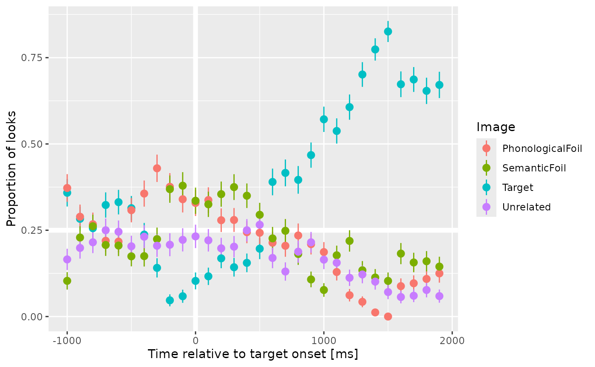

Aggregating Eyetracking Data
TJ Mahr
2024-07-30
aggregating.RmdLet’s consider some word recognition eyetracking data from a Visual World style experiment. On each trial, an array of images appears. For example:

Among these images is a target (here, bell), a phonological competitor (bee), a semantic competitor (drum), and an unrelated word (swing). The listener hears a prompt to view one of images: Find the bell. The operative experimental question is how does the probability of fixating on the named image change over time.
The package provides some example eyetracking data from this
experiment for one participant. Each row is a sample from an eyetracker
running at a rate of 60 Hz (60 frames per second). Time is
in milliseconds. We have already mapped the x-y gaze
coordinates onto screen locations. These gaze locations are coded in the
GazeByImageAOI column as looks to the
"Target", "PhonologicalFoil",
"SemanticFoil", or "Unrelated" images, or as
"tracked" (ambiguous/intermediate location) or
NA (offscreen or missing).
library(littlelisteners)
library(dplyr, warn.conflicts = FALSE)
four_image_data
#> # A tibble: 20,910 × 25
#> Subject BlockNo Time GazeByAOI GazeByImageAOI TargetLocation
#> <chr> <int> <int> <chr> <chr> <chr>
#> 1 001P 1 35238 tracked tracked UpperRightImage
#> 2 001P 1 35255 tracked tracked UpperRightImage
#> 3 001P 1 35272 tracked tracked UpperRightImage
#> 4 001P 1 35288 tracked tracked UpperRightImage
#> 5 001P 1 35306 tracked tracked UpperRightImage
#> 6 001P 1 35322 tracked tracked UpperRightImage
#> 7 001P 1 35338 tracked tracked UpperRightImage
#> 8 001P 1 35355 tracked tracked UpperRightImage
#> 9 001P 1 35372 tracked tracked UpperRightImage
#> 10 001P 1 35388 tracked tracked UpperRightImage
#> # ℹ 20,900 more rows
#> # ℹ 19 more variables: PhonologicalLocation <chr>, SemanticLocation <chr>,
#> # UnrelatedLocation <chr>, Audio <chr>, CarrierOnset <int>, TrialNo <int>,
#> # UpperLeftImage <chr>, UpperRightImage <chr>, LowerRightImage <chr>,
#> # LowerLeftImage <chr>, Target <chr>, SemanticFoil <chr>,
#> # PhonologicalFoil <chr>, Unrelated <chr>, UpperLeftImageStimulus <chr>,
#> # UpperRightImageStimulus <chr>, LowerRightImageStimulus <chr>, …Response definitions
To deal with eyetracking data in a generic way, we need a way to describe eyetracking responses. We assume that there are four basic gaze types.
- Primary responses: A gaze to a primary or target image.
- Other responses: Gazes to competing images.
- Elsewhere looks: A gaze that is onscreen but not a primary or other response. Typically, this occurs when the participant is shifting between images.
- Missing looks: A missing or offscreen gaze.
A response definition is a programmatic way of describing
these response types. In the code below, response_def is a
response definition for the four-image experiment with a
"Target" image and the three competing images lumped
together in the "Others", and other looks are either
"tracked" or missing (NA).
response_def <- create_response_def(
primary = "Target",
others = c("PhonologicalFoil", "SemanticFoil", "Unrelated"),
elsewhere = "tracked",
missing = NA,
label = "looks to target"
)
response_def
#> List of 5
#> $ response_def: chr "looks to target"
#> $ primary : chr "Target"
#> $ others : chr [1:3] "PhonologicalFoil" "SemanticFoil" "Unrelated"
#> $ elsewhere : chr "tracked"
#> $ missing : logi NA
#> - attr(*, "class")= chr "response_def"Aggregating looks
These response definitions allow us to aggregate looking data in a
generic way. The function aggregate_looks() counts the
number of looks to each of the four response categories using an
aggregation formula. For example, we can count looks by participant.
There are several columns here, so we use glimpse() to look
at some values from every column.
four_image_data |>
aggregate_looks(response_def, Subject ~ GazeByImageAOI) |>
glimpse()
#> Rows: 1
#> Columns: 14
#> $ .response_def <chr> "looks to target"
#> $ Subject <chr> "001P"
#> $ PhonologicalFoil <int> 2461
#> $ SemanticFoil <int> 2478
#> $ Target <int> 4094
#> $ Unrelated <int> 2033
#> $ Elsewhere <dbl> 1202
#> $ Missing <dbl> 8642
#> $ Others <dbl> 6972
#> $ Primary <dbl> 4094
#> $ Looks <dbl> 20910
#> $ Prop <dbl> 0.369962
#> $ PropSE <dbl> 0.004589513
#> $ PropNA <dbl> 0.4132951Or looks by participant by trial. Here we just print the dataframe as is.
four_image_data |>
aggregate_looks(response_def, Subject + TrialNo ~ GazeByImageAOI)
#> # A tibble: 24 × 15
#> .response_def Subject TrialNo PhonologicalFoil SemanticFoil Target Unrelated
#> <chr> <chr> <int> <int> <int> <int> <int>
#> 1 looks to targ… 001P 1 232 80 250 105
#> 2 looks to targ… 001P 2 181 93 242 160
#> 3 looks to targ… 001P 3 79 101 231 66
#> 4 looks to targ… 001P 4 188 135 123 145
#> 5 looks to targ… 001P 5 90 170 164 79
#> 6 looks to targ… 001P 6 70 198 172 24
#> 7 looks to targ… 001P 7 83 47 109 195
#> 8 looks to targ… 001P 8 60 63 77 40
#> 9 looks to targ… 001P 9 71 50 50 50
#> 10 looks to targ… 001P 10 57 305 150 82
#> # ℹ 14 more rows
#> # ℹ 8 more variables: Elsewhere <dbl>, Missing <dbl>, Others <dbl>,
#> # Primary <dbl>, Looks <dbl>, Prop <dbl>, PropSE <dbl>, PropNA <dbl>We can also perform other kind of aggregations using different response definitions. For instance, we can compare image locations by writing a new response definition.
location_def <- create_response_def(
primary = "LowerLeftImage",
others = c("UpperRightImage", "UpperLeftImage", "LowerRightImage"),
elsewhere = "tracked",
missing = NA
)
aggregate_looks(four_image_data, location_def, Subject ~ GazeByAOI) |>
glimpse()
#> Rows: 1
#> Columns: 14
#> $ .response_def <chr> "LowerLeftImage"
#> $ Subject <chr> "001P"
#> $ LowerLeftImage <int> 2761
#> $ LowerRightImage <int> 3099
#> $ UpperLeftImage <int> 2569
#> $ UpperRightImage <int> 2637
#> $ Elsewhere <dbl> 1202
#> $ Missing <dbl> 8642
#> $ Others <dbl> 8305
#> $ Primary <dbl> 2761
#> $ Looks <dbl> 20910
#> $ Prop <dbl> 0.249503
#> $ PropSE <dbl> 0.004113552
#> $ PropNA <dbl> 0.4132951We can perform multiple aggregations at once. First,
cycle_response_def() can create a set of response
definitions where each response acts as the primary outcome.
all_defs <- cycle_response_def(response_def)
all_defs
#> [[1]]
#> List of 5
#> $ response_def: chr "Target"
#> $ primary : chr "Target"
#> $ others : chr [1:3] "PhonologicalFoil" "SemanticFoil" "Unrelated"
#> $ elsewhere : chr "tracked"
#> $ missing : logi NA
#> - attr(*, "class")= chr "response_def"
#>
#> [[2]]
#> List of 5
#> $ response_def: chr "PhonologicalFoil"
#> $ primary : chr "PhonologicalFoil"
#> $ others : chr [1:3] "Target" "SemanticFoil" "Unrelated"
#> $ elsewhere : chr "tracked"
#> $ missing : logi NA
#> - attr(*, "class")= chr "response_def"
#>
#> [[3]]
#> List of 5
#> $ response_def: chr "SemanticFoil"
#> $ primary : chr "SemanticFoil"
#> $ others : chr [1:3] "Target" "PhonologicalFoil" "Unrelated"
#> $ elsewhere : chr "tracked"
#> $ missing : logi NA
#> - attr(*, "class")= chr "response_def"
#>
#> [[4]]
#> List of 5
#> $ response_def: chr "Unrelated"
#> $ primary : chr "Unrelated"
#> $ others : chr [1:3] "Target" "PhonologicalFoil" "SemanticFoil"
#> $ elsewhere : chr "tracked"
#> $ missing : logi NA
#> - attr(*, "class")= chr "response_def"When given a list of response definitions,
aggregate_looks() does the right thing and computes the
aggregation for each one.
four_image_data |>
aggregate_looks(all_defs, Subject ~ GazeByImageAOI) |>
select(
ResponseDef = .response_def,
Subject, Primary,
Others, Prop, PropSE, PropNA
) |>
knitr::kable()| ResponseDef | Subject | Primary | Others | Prop | PropSE | PropNA |
|---|---|---|---|---|---|---|
| Target | 001P | 4094 | 6972 | 0.3699620 | 0.0045895 | 0.4132951 |
| PhonologicalFoil | 001P | 2461 | 8605 | 0.2223929 | 0.0039532 | 0.4132951 |
| SemanticFoil | 001P | 2478 | 8588 | 0.2239292 | 0.0039629 | 0.4132951 |
| Unrelated | 001P | 2033 | 9033 | 0.1837159 | 0.0036813 | 0.4132951 |
Growth curve analysis is aggregating looks over time
With aggregate_looks(), we can estimate growth curves of
looking probabilities. First, for this dataset, we need to adjust the
eyetracking timestamps so that time 0 occurs at target onset. We are
also going to bin and downsample the eyetracking data to have an
effective sampling rate of 10 frames per second—just for plotting.
growth_curves <- four_image_data |>
adjust_times(Time, TargetOnset, Subject, BlockNo, TrialNo) |>
filter(-1005 <= Time, Time <= 2000) |>
assign_bins(6, Time, Subject, BlockNo, TrialNo) |>
# Set a time for each bin
group_by(Subject, BlockNo, TrialNo, .bin) |>
mutate(BinTime = round(min(Time))) |>
aggregate_looks(all_defs, Subject + BinTime ~ GazeByImageAOI) |>
rename(Time = BinTime)We now have four growth curves, one for each image type, in a single dataframe.
growth_curves
#> # A tibble: 120 × 15
#> .response_def Subject Time PhonologicalFoil SemanticFoil Target Unrelated
#> <chr> <chr> <dbl> <int> <int> <int> <int>
#> 1 Target 001P -1000 54 15 52 24
#> 2 Target 001P -900 48 38 47 33
#> 3 Target 001P -800 46 45 44 37
#> 4 Target 001P -700 36 34 53 41
#> 5 Target 001P -600 38 36 58 43
#> 6 Target 001P -500 53 30 54 35
#> 7 Target 001P -400 57 28 38 37
#> 8 Target 001P -300 67 35 22 32
#> 9 Target 001P -200 56 55 7 31
#> 10 Target 001P -100 52 58 9 34
#> # ℹ 110 more rows
#> # ℹ 8 more variables: Elsewhere <dbl>, Missing <dbl>, Others <dbl>,
#> # Primary <dbl>, Looks <dbl>, Prop <dbl>, PropSE <dbl>, PropNA <dbl>We can plot these growth curves.
library(ggplot2)
ggplot(growth_curves) +
aes(x = Time, y = Prop, color = .response_def) +
geom_hline(size = 2, color = "white", yintercept = .25) +
geom_vline(size = 2, color = "white", xintercept = 0) +
geom_pointrange(aes(ymin = Prop - PropSE, ymax = Prop + PropSE)) +
labs(
x = "Time relative to target onset [ms]",
y = "Proportion of looks",
color = "Image"
)
#> Warning: Using `size` aesthetic for lines was deprecated in ggplot2 3.4.0.
#> ℹ Please use `linewidth` instead.
#> This warning is displayed once every 8 hours.
#> Call `lifecycle::last_lifecycle_warnings()` to see where this warning was
#> generated.